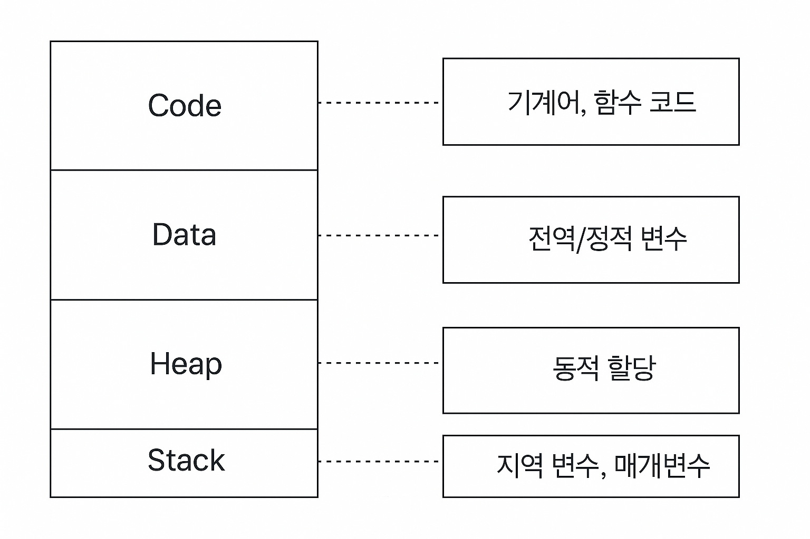
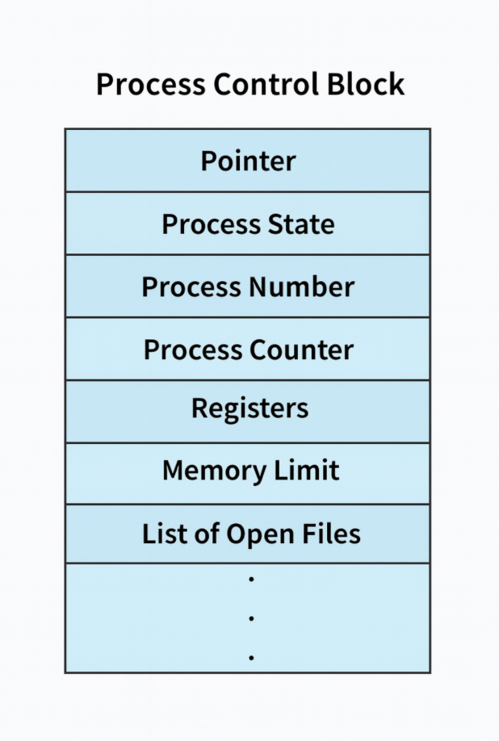
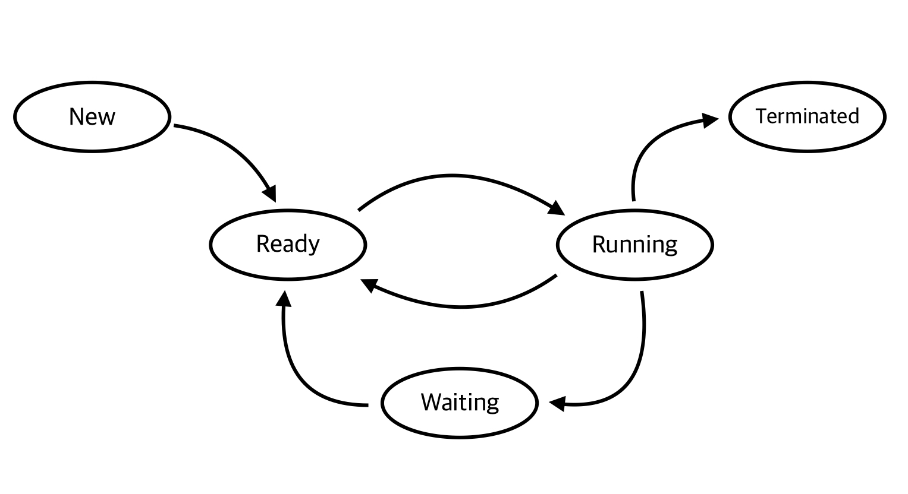

Process 정리
운영체제 프로세스 정리
운영체제를 공부하다 보면 반드시 마주치는 주제가 있습니다. 바로 프로세스(Process) 입니다.
단순히 "실행 중인 프로그램"이라고만 외워두면 금방 잊어버리기 쉽죠.
그래서 이번 글에서는 프로세스를 조금 더 자세하게 오래 기억할 수 있도록,
메모리 구조부터 상태 전이까지 한 번에 정리해 보겠습니다.
프로세스란?
프로세스(Process) 는 메모리에서 실행 중인 프로그램을 의미합니다.
정적인 프로그램 파일이 실행되면 운영체제가 CPU와 메모리를 할당해주고,
이 순간 프로그램은 살아있는 프로세스로 변신합니다.
프로세스 메모리 구조

프로세스는 실행되면서 메모리 위에서 여러 영역으로 나뉘어 관리됩니다.
각 영역은 저마다의 역할이 있고, 이 덕분에 프로그램이 질서 있게 실행될 수 있죠.
- Code: 실행 가능한 명령어가 저장된 영역 (읽기 전용)
- Data: 전역 변수와 정적 변수가 저장
- Heap: 실행 도중 동적으로 할당되는 메모리
- Stack: 함수 호출, 지역 변수, 매개변수가 저장 (LIFO 구조)
프로세스 제어 블록 (PCB)
운영체제는 수많은 프로세스를 동시에 다루기 때문에,
각 프로세스를 관리할 "이력서" 같은 자료구조가 필요합니다.
이게 바로 PCB(Process Control Block) 입니다.
PCB에는 프로세스 ID, 현재 상태, CPU 레지스터 값, 메모리 정보, 파일·I/O 정보 등이 기록됩니다.
👉 중요한 점은, CPU 스케줄링 때문에 PCB가 꼭 필요하다는 겁니다.
- 어떤 프로세스가 실행 중일 때, 다른 프로세스가 CPU를 점유하면 현재 프로세스는 Ready 상태로 밀려납니다.
- 이때 운영체제는 PCB에 현재까지의 작업 내용(레지스터 값, 프로그램 카운터 등)을 저장합니다.
- 나중에 이 프로세스가 다시 CPU를 배정받으면, PCB 정보를 불러와 중단된 지점부터 실행을 이어갈 수 있습니다.
즉, PCB는 프로세스가 CPU를 뺏겼다가도 다시 이어서 실행할 수 있게 하는 “저장 포인트” 같은 역할을 합니다.
📌 추가 포인트
PCB는 일반 메모리 영역이 아니라, 커널 영역(Kernel Space) 에 위치합니다.
이는 보안과 안정성을 위해서입니다.

PCB에 담기는 주요 정보
- 포인터:
- 보통은 다른 PCB들과 연결 리스트 형태로 묶기 위한 포인터를 의미하며,
- 동시에 컨텍스트 전환 시 스택 포인터를 저장하는 용도로 사용되기도 한다.
- 프로세스 상태: Ready, Running, Waiting 등 현재 상태
- 프로세스 번호(PID): 프로세스를 구분하는 고유 식별자
- 프로그램 카운터: 다음 실행할 명령어의 주소
- 레지스터 정보: 실행 도중의 CPU 레지스터 값
- 메모리 관리 정보: 프로세스의 메모리 위치 정보, 경계 레지스터 값
- 열린 파일 목록: 해당 프로세스가 열고 있는 파일과 입출력 리소스
프로세스 상태와 라이프사이클 🔄

프로세스는 태어나서 죽기까지 여러 단계를 거칩니다.
특히 5-State Model은 시험이나 면접에서 가장 자주 등장하니 꼭 기억해두세요.
- New → 이제 막 만들어진 상태
- Ready → 실행할 준비가 끝났지만 CPU 할당을 기다리는 상태
- Running → CPU를 차지하고 실제로 실행 중인 상태
- Waiting(Blocked) → I/O 등 이벤트를 기다리는 상태
- Terminated → 실행이 끝나고 종료된 상태
👉 결국 이런 세밀한 상태 전이가 필요한 이유도 CPU 스케줄링 때문입니다.
한정된 CPU를 여러 프로세스가 효율적으로 나눠 쓰도록 운영체제가 관리하기 위해,
각 프로세스의 상태를 추적하고 전환하는 체계가 꼭 필요한 것이죠.
프로세스 생성과 종료
운영체제는 새로운 프로세스가 필요할 때 고유 PID를 부여하고, 메모리를 할당하며, PCB를 초기화합니다.
이 과정을 통해 프로세스는 New → Ready 상태로 전환되어 실행을 기다리게 됩니다.
프로세스 생성 방식
UNIX 계열
fork(): 현재 실행 중인 부모 프로세스를 그대로 복제하여 자식 프로세스를 생성합니다.
(코드, 데이터, 힙, 스택 영역을 그대로 복사하되, PID는 새롭게 부여됨)exec(): 현재 프로세스를 완전히 새로운 프로그램으로 덮어씁니다.wait(): 부모 프로세스가 자식 프로세스의 종료를 기다릴 때 사용됩니다.
Windows 계열
CreateProcess(): 프로세스를 생성하면서 동시에 특정 프로그램을 실행합니다.
(UNIX의fork()+exec()기능을 합친 형태라고 볼 수 있습니다.)
👉 즉, 부모 프로세스를 복제(fork) → 필요하면 새로운 프로그램으로 교체(exec) 라는 흐름을 기억하면 좋습니다.
프로세스 종료 방식
- 정상 종료: 작업이 끝나고
exit()시스템 호출로 종료 - 비정상 종료: 오류나 예외로
abort()호출 - 부모 프로세스에 의한 종료:
kill()같은 명령으로 자식 프로세스를 강제 종료 - 신호에 의한 종료:
SIGKILL,SIGSTOP등 외부 신호에 의해 종료
프로세스가 종료되면 운영체제는 해당 프로세스에 할당된 메모리 공간을 해제하고,
PCB도 정리하여 시스템 자원이 회수됩니다.
⚠️ 단, UNIX 계열에서는 부모 프로세스가 자식의 종료 상태를 확인(wait())하기 전까지 PCB 일부가 남아 있게 됩니다. 이런 상태를 좀비 프로세스(Zombie Process) 라고 부르며, 자식의 종료 정보를 부모가 수거해야 완전히 제거됩니다.
마무리
정리해 보면, 프로세스는 단순한 실행 단위를 넘어
- 메모리 구조(Code, Data, Heap, Stack)
- PCB라는 관리 데이터
- 상태(Ready, Running, Waiting…)
이 세 가지 관점에서 이해해야 완전히 그림이 잡힙니다.
👉 오늘은 프로세스 자체에 집중했으니, 다음 글에서는 스레드(Thread) 를 다루면서
“프로세스와 스레드의 차이가 무엇인지”를 이어서 살펴보겠습니다.
댓글